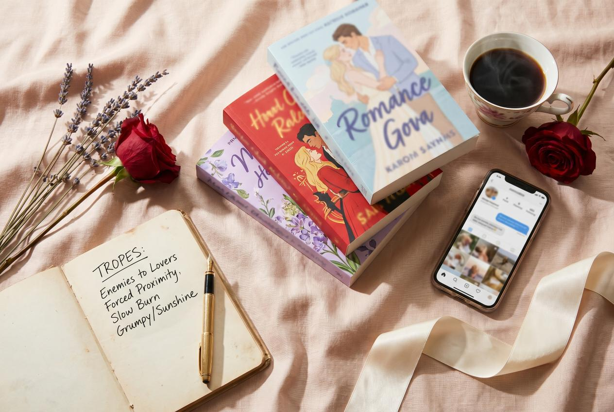

Romance is the highest-volume fiction category in indie publishing and the most ruthlessly trope-driven. Readers don't browse for "a great love story" — they browse for "enemies-to-lovers small-town single dad." Get the trope signal right and you're already ahead of half the genre. Get it wrong and a beautiful book sinks in week two.
This is the working launch strategy for romance authors in 2026 — built around how readers actually decide, where they actually buy, and what kind of press actually moves copies in a genre that lives or dies by word-of-mouth.
The Trope Stack Is the Positioning
Before you talk about ads, BookTok, or covers, you have to nail the trope stack. Modern romance readers — especially the BookTok-adjacent crowd that drives breakout sales — buy on a trope shorthand:
- enemies to lovers
- small town
- second chance
- forced proximity
- fake dating
- single dad / single mom
- billionaire
- grumpy/sunshine
- friends to lovers
- workplace / office
- amnesia
- only one bed
- reverse harem (RH) for paranormal
- mafia / dark romance
- sports romance (hockey is its own subcategory now)
Your book has 2–4 of these. The cover and blurb need to surface the strongest two within the first half-second of attention. Look at the top 50 in your subgenre on Amazon right now and reverse-engineer which trope-pair the cover and title are signaling. If your book's pair isn't readable from the thumbnail and the first line of the blurb, you're working uphill.
Romance readers are not snobby about tropes — they're enthusiastic about them. "Trope-forward" is not a compromise; it's the genre's love language.
KU vs Wide — The Honest Math for Romance

The single biggest strategic decision for a romance author is Kindle Unlimited exclusivity vs going wide (Amazon + Apple + Kobo + Nook + Google Play).
Kindle Unlimited (90-day exclusive) makes sense when:
- You're newer (first 1–4 books) and need discovery velocity
- Your subgenre indexes heavily on KU (contemporary, dark romance, paranormal, RH)
- You can write a series at 4-month cadence to feed KU's read-through engine
- You can't afford the marketing spend a wide launch demands
Wide makes sense when:
- You have an established readership (5+ books) and existing wide reader habits
- You write historical, romantasy, or LGBTQ+ romance (better wide markets)
- You're willing to trade short-term volume for long-term backlist stability
- You're building a direct-sales/Shopify channel (a growing romance segment)
Most successful indie romance careers in 2026 follow this arc: KU for the first 3–6 books, then go wide once you have a reader base. The reverse path — wide first, then KU — almost never works because wide platforms reward consistent presence, and pulling for KU breaks that trust.
For a debut, KU is the higher-ROI choice unless you have a specific platform reason to go wide. Read the Kindlepreneur KU vs wide breakdown for the math.
Cover Signals That Sell Romance in 2026
Romance cover trends shift faster than any other genre. The 2026 dominant signals:
- Illustrated covers still rule contemporary and rom-com — bright, character-forward illustrations with two figures, a clear setting, and a snappy title in a hand-drawn font
- Photographic covers with character models still dominate dark romance, mafia, sports, and paranormal — high-contrast, often single-figure or torso-only
- Title typography is doing more work — bold, oversized, often in a contrasting color that's the loudest element
- Spicy-level signals are increasingly explicit on the cover (a small "21+" symbol, a heat-level rating in the corner, or distinct iconography for "no sex on page" vs "open door")
- Series branding must be visible — same color band across all installments, same author name placement, same fonts
The lazy mistake: using a stock-photo cover that signals nothing specific. The result: readers can't tell what subgenre or heat level they're getting and pass. Spend $400–$1,200 on a designer with a romance-specific portfolio. Reedsy and 100covers and Damonza all have romance specialists.
The Pre-Launch Build (60 Days Out)
Romance has the most active reader-author community of any genre, which means pre-launch builds compound faster here than anywhere else.
The pre-launch checklist:
- ARC team of 80–200 readers, sourced from Booksprout, Hidden Gems Books, NetGalley Co-op, your existing newsletter, and trusted bookstagrammers. Romance readers will deliver review velocity if you ask.
- Newsletter list at 1,000+ before book one. If you don't have one, run a six-week newsletter swap sprint via StoryOrigin — group promos with 10–30 authors trading reader-magnet downloads.
- TikTok account active for 60+ days before launch with at least 10 videos posted, even if engagement is low. The algorithm needs cold-start data.
- Bookstagram engagement with 30–50 accounts in your subgenre — comment thoughtfully on posts, send free ARCs to top creators, build relationships before you ask for promo.
- Goodreads page live with the book plus three "currently reading" friends from the ARC team locked in.
- Pre-order on Amazon at least 21 days out (longer for KU is fine — they don't penalize it the way they used to in 2022–2023).
- A tightly-written blurb that hits the tropes in the first two lines and the heat level by the third paragraph.
Romance readers are forgiving of authors who are real, friendly, and present. They're unforgiving of cookie-cutter promo. Personality beats polish.
Launch Week Sequence
A realistic launch-week target for a polished debut romance with the pre-launch build above is 800–2,500 paid copies plus 500–1,500 KU borrows in the first seven days. Elite indie romance launches hit 5,000+ copies, but those authors are usually 3+ books in. For a true debut, the 1,000–3,000 range is the realistic band.
Day -3 to Day 0:
- Final ARC reminder; aim for 40+ reviews live by day 5
- Newsletter "the book is here" send (open rates of 35–45% are normal for engaged romance lists)
- Pre-launch BookTok video: "POV: my [trope pair] book drops Tuesday"
Day 1–3:
- BookFunnel cross-promo in a new-release romance bundle
- 3–5 BookTok videos through release week — the algorithm rewards consistent posting more than one viral attempt
- Bookstagram "release day" reels and posts from creators you've been engaging with for weeks
- Newsletter swaps with 5–10 author partners through StoryOrigin
- Amazon Ads at $40–$80/day on competitor-author exact-match keywords
Day 4–7:
- Bargain Booksy / Robin Reads / Fussy Librarian feature ($40–$200)
- Goodreads giveaway live (10 ebook copies, runs 14 days)
- Engage every review under four stars with grace; don't reply to one-star reviews at all (this is the rule)
- Apply for BookBub Featured Deal for week 3 at $0.99 — most debuts are rejected; that's normal
Day 8–14:
- Pulse Amazon Ads up to $100–$150/day if ACOS is under 35%
- Rotate ad creative as reviews accumulate ("4.6 stars from 200 readers")
- First "thank you" newsletter to your list — invite them to leave a review if they enjoyed it
- Schedule book 2 pre-order to capture momentum readers right now
This sequence reliably produces a top-100 subgenre placement in week one for well-positioned debuts.
BookTok — What Actually Works (and What Doesn't)
BookTok drove an estimated 30%+ of romance ebook discovery in 2024–2025 and is still the single most volatile channel in indie marketing. The patterns that work in 2026:
Works:
- Trope-pair videos ("if you love grumpy/sunshine + only one bed, read this")
- Author POV videos showing book-coded life (writing setup, edits, ARC mailings, reader reactions)
- Reading-recommendation lists ("3 dark romance reads for fall")
- Pinning a single high-performing video to your profile and using it as the ad-funnel for your book link
- Showing up consistently — 4–7 short videos a week for 8+ weeks before measuring
Doesn't work:
- Single hype videos with no follow-up posting cadence
- Selling hard in every video — readers tune out promo
- Tagging celebrities, bestselling authors, or fake-trending audio
- Buying TikTok followers — the algorithm punishes engagement-rate drops
For most authors, BookTok is the third channel after KU/Amazon and email. It's not a replacement for the other two. Authors who go all-in on BookTok and ignore the email list rebuild from zero every launch.
Where Editorial Press Fits Romance Marketing
Most romance authors assume press doesn't apply to them. That's mostly true for press releases on wire services — pure waste of money for fiction. But it isn't true for full editorial features in the magazines romance readers actually consume.
The romance reader demographic overlaps significantly with readers of Closer Weekly, In Touch Weekly, Star Magazine, OK!, and Hollywood Life. A full editorial article — with the book cover, author photo, and an interview — placed in one of those magazines is a different product from a press release. It sits next to celebrity gossip and lifestyle content the reader is already engaged with. Conversion to book buyers is significantly higher than from a generic news pickup.
The press hooks that work for romance:
- "How [author] built a six-figure romance career around [unusual hometown / day job]"
- "The [trope] novel everyone is reading this fall"
- "Why women in their 30s are buying romance novels in record numbers"
- "Behind the scenes of a TikTok-fueled book deal" (if the platform path is your story)
These are full feature angles, not blurbs. Editorial articles are also evergreen — they sit on the magazine's website indefinitely and continue feeding traffic and Amazon halo for months. See book PR cost in 2026 for how guaranteed editorial pricing compares to traditional retainer publicists.
Series Cadence and Backlist Compounding
Romance is even more series-driven than cozy mystery. Sustainable indie romance careers run 4–6 books per year for 3–5 years to hit a self-sustaining backlist, then taper to 2–3 books per year after that.
Read-through targets:
| Metric | Healthy benchmark |
|---|---|
| Book 1 to Book 2 | 40–60% |
| Book 2 to Book 3 | 65–80% |
| Book 3+ | 75–90% |
| KU pages per book per month | 30K–500K depending on subgenre and series age |
Subgenres that read through hardest: contemporary small-town, dark romance, RH, mafia. Subgenres with weaker read-through: standalone literary romance, historical (longer book gap acceptable), romantasy (long books, slower cadence).
A romance author who stays disciplined on cadence and trope clarity for 24 months almost always builds a $3,000–$15,000/month income from backlist. The ones who plateau usually have one of three issues: cover signal, blurb mismatch, or a 9-month gap between books.
What VUGA does for romance authors
VUGA is a marketing-first publisher with contractual editorial access to magazines romance readers actively consume — Closer Weekly, In Touch Weekly, Star Magazine, OK!, Hollywood Life — plus a 104-outlet digital network and tier-1 magazine add-ons (TIME, Rolling Stone UK). We don't take royalties, run wire releases, or manage your KDP account. We place full editorial articles by contract, with money-back guarantees if a placement falls through. For a romance author with a polished book and a working KU strategy, layering editorial press onto an existing launch (instead of replacing it) is what compounds. Our for-authors packages start at a $97 trial and run through $19,997 for a TIME + Rolling Stone UK bundle — cheaper than a single month with most boutique publicists.
A Realistic 12-Month Romance Plan
If you're starting from "manuscript drafted, no platform yet," here's what 12 disciplined months looks like:
- Month 1: Finalize trope stack, cover, blurb. Start TikTok and newsletter.
- Month 2: ARC team built (target 80). Pre-order live. Newsletter at 500+.
- Month 3: Launch book 1 in KU. Hit 1,500–2,500 copies in first 14 days.
- Months 4–6: Drafting books 2 and 3. Sustaining ads. Newsletter at 1,500+.
- Month 7: Book 2 launches. Series page live. Read-through tracked.
- Month 9: Book 3 launches. First magazine feature placed (lifestyle weekly).
- Month 10: BookBub Featured Deal applied for and (eventually) earned.
- Month 12: Three-book backlist live, $2,000–$8,000/month earnings, real BookTok presence, 3,000+ newsletter subscribers.
This is the realistic version. The romance authors who outperform this curve usually had a head start (existing platform, traditional-publishing backstory) or got lucky on a single TikTok video. Don't plan around luck. Plan around the cadence and let the lucky moments compound on top.
If you want a specific look at your trope stack, blurb, and launch sequence, drop a note. The first review costs nothing — it's faster than guessing.
Sources for this article:
- Kindlepreneur, "How to Market a Romance Novel"
- Reedsy, "Romance Cover Design Trends"
- BookBub Partners, "Romance Reader Trends 2025"
- Jane Friedman, "KU vs Wide for Romance"
- Publishing Perspectives, "BookTok and Romance Sales"
- StoryOrigin, "Newsletter Swaps for Romance Authors"
- IngramSpark, "Going Wide as a Romance Author"